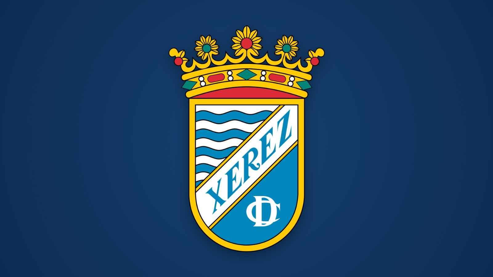

El Xerez CD cumple 79 años

Foto: Xerez CDUn repaso institucional a casi ocho décadas de andadura de un club que nació en 1947 y que ha vivido algunos de los episodios más singulares del fútbol modesto español
Cada mes de septiembre, la memoria xerecista se remonta de manera inevitable a 1947, año en el que quedó constituido el Jerez Club Deportivo, germen de lo que hoy conocemos como Xerez CD. Casi ochenta años después, resulta obligado detenerse a repasar el largo camino recorrido por una entidad que ha conocido prácticamente de todo: alegrías históricas, descensos administrativos, refundaciones forzosas y hasta la gloria de pisar la máxima categoría del fútbol nacional.
Un nacimiento marcado por la controversia
La entidad echó a andar compitiendo en categoría Regional, logrando de inmediato el ascenso a Tercera División. Sin embargo, aquel primer triunfo deportivo quedó empañado por una decisión de carácter político: el propio Ministerio de Deportes, entonces bajo la tutela del general Moscardó, anuló aquel ascenso para favorecer al conjunto España de Tánger, amparándose en un supuesto "interés nacional superior". El golpe obligó al recién nacido club a disputar de nuevo la misma categoría al curso siguiente, logrando esta vez sí un ascenso reconocido oficialmente por la Federación.
Fue así como la campaña 1949/50 se convirtió en el primer curso de la institución en el fútbol de ámbito estatal, compitiendo entre equipos de la relevancia del Recreativo de Huelva, el Real Betis o el Cádiz, entre otros. Pese a la inexperiencia propia de un recién llegado, el conjunto jerezano firmó una notable séptima posición.
Los años cincuenta: primer salto a Segunda y sucesivos tropiezos
A comienzos de los cincuenta llegó el primer gran hito histórico del club: el ascenso a Segunda División, certificado en una emocionante última jornada disputada en Tánger. La entidad permaneció cinco cursos consecutivos en aquella categoría, hasta que una dolorosa derrota en Sevilla, ante un Betis ya sin objetivos en juego, precipitó el descenso.
La institución regresó entonces a Tercera, donde protagonizó varios intentos fallidos de recuperar la categoría de plata, cayendo sucesivamente ante rivales como el Badajoz o el Málaga en las correspondientes promociones de ascenso. Fue también en esta década cuando nació el Trofeo de La Vendimia, certamen veraniego que se erige como el segundo más veterano de todo el fútbol español, únicamente por detrás del mítico Teresa Herrera coruñés.
Los sesenta: el cambio de nombre y el regreso a la categoría de plata
La década siguiente estuvo salpicada de sucesivas promociones de ascenso, con eliminatorias frente a conjuntos como el Rayo Vallecano, en las que la fortuna no siempre acompañó a los intereses jerezanos. Un hito administrativo de gran calado se produjo en 1964, cuando la presidencia solicitó formalmente el cambio de denominación, pasando de Jerez Club Deportivo a la actual Xerez Club Deportivo.
El ansiado regreso a Segunda División llegaría en la campaña 1966/67, aunque duraría apenas un curso, coincidiendo además con una profunda reestructuración de la categoría que redujo de dos a un único grupo, provocando numerosos descensos, entre ellos el del conjunto azulino.
Los setenta: nace la Segunda B
El inicio de la década deparó un nuevo, aunque breve, paso por Segunda División, tras proclamarse campeón de su grupo de Tercera. La estancia en la categoría de plata duró únicamente una temporada. El acontecimiento estructural más relevante de este periodo llegó en 1977, con la creación de una nueva categoría intermedia, la Segunda División B, a la que el conjunto jerezano accedería tras concluir entre los primeros clasificados de Tercera.
Los ochenta: encierro histórico y regreso a Segunda
Esta década deja dos episodios de gran trascendencia institucional. El primero, deportivo, con la conquista del grupo de Segunda B en la temporada 1981/82. El segundo, de enorme calado social, tuvo lugar en el curso 1985/86, cuando la plantilla protagonizó un encierro de veinticinco días en las instalaciones del estadio Domecq como consecuencia de la delicada situación económica que atravesaba el club. Pese a aquella crisis, el equipo certificó el ascenso a Segunda División en la última jornada de Liga.
En 1988/89 se produjo, además, un cambio de enorme significado simbólico: el traslado desde el histórico estadio Domecq hasta las nuevas instalaciones de Chapín, recinto que desde entonces se ha convertido en la casa del xerecismo.
Los noventa: transformación institucional y liguillas de ascenso
La última década del siglo comenzó con un nuevo descenso a Segunda B, cerrando así un ciclo especialmente brillante de la entidad en la categoría de plata. Poco después, el club experimentó una profunda transformación jurídica al convertirse en Sociedad Anónima Deportiva. Durante estos años se sucedieron varias participaciones en liguillas de ascenso que, pese a las expectativas generadas, no fructificaron hasta la campaña 1996/97, cuando el conjunto jerezano certificó su regreso a Segunda tras una intensa promoción resuelta en la última jornada.
El siglo XXI: la gesta histórica del ascenso a Primera
El nuevo milenio deparó al club algunos de los episodios más singulares de toda su historia. Circunstancias ajenas al terreno de juego obligaron a la entidad a disputar parte de una temporada fuera de Jerez, primero en instalaciones de Sanlúcar de Barrameda y posteriormente en un recinto provisional, mientras se acometían obras de remodelación en Chapín con motivo de la celebración de competiciones ecuestres.
El punto culminante de toda la historia institucional llegó en la campaña 2008/09, cuando el conjunto azulino se proclamó campeón de Segunda División, logrando por primera y única vez en su historia el ascenso a Primera División, tras una exigente lucha que exigió acumular ochenta y un puntos. Aquella gesta situó al club en la élite del fútbol español, aunque la permanencia en la máxima categoría resultó efímera, certificándose el descenso en la última jornada por una mínima diferencia respecto a otros conjuntos implicados en la lucha por la salvación.
Los años posteriores trajeron consigo momentos especialmente duros para la institución: un proceso concursal, un nuevo descenso a Segunda B y, finalmente, un durísimo golpe administrativo en el verano de 2013, cuando el club fue apartado de la competición profesional por impagos, viéndose obligado a competir en Tercera División. A ello se sumó la pérdida temporal del estadio de Chapín, cedido por decisión municipal, lo que forzó a la entidad a disputar sus encuentros en las instalaciones de La Granja en unas circunstancias deportivas y económicas extremadamente complicadas, que desembocarían en un nuevo descenso, esta vez hasta la Primera Andaluza.
Una historia que sigue escribiéndose
Casi ochenta años después de su fundación, el Xerez CD continúa siendo un club que arrastra consigo una historia repleta de contrastes: momentos de gloria compartida con toda una ciudad, pero también episodios institucionales que han puesto a prueba la resistencia de su afición. Un recorrido que, jornada tras jornada, sigue construyendo nuevos capítulos en la memoria colectiva del xerecismo.
🇬🇧 Read in English ← Volver a la portada